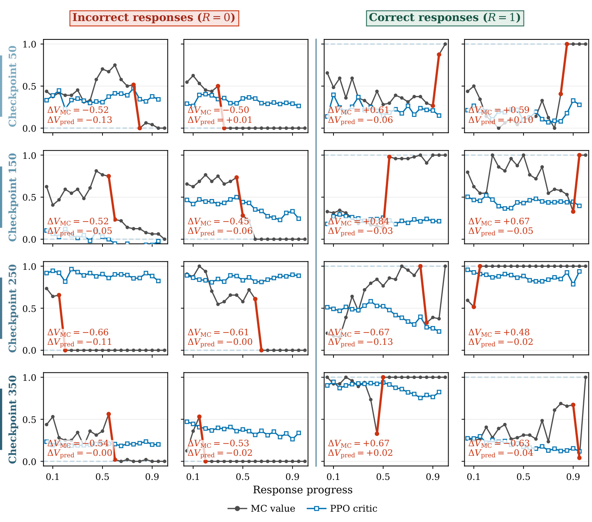
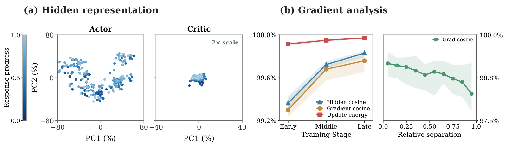
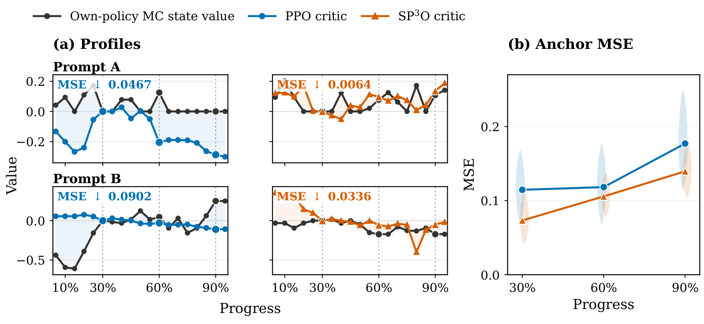
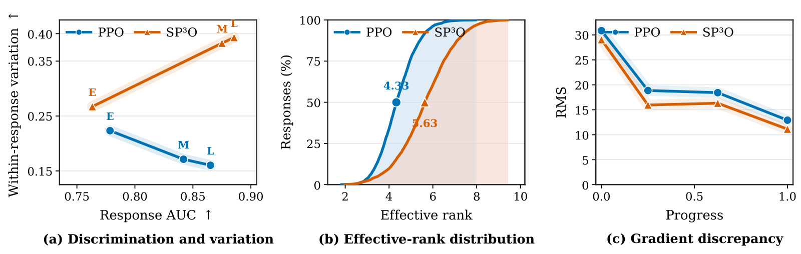
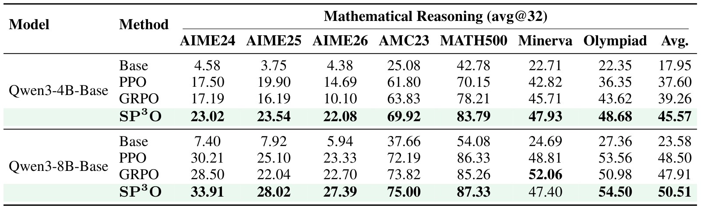
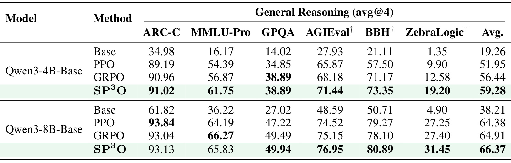
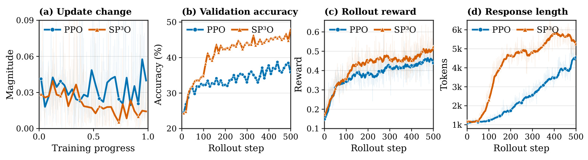
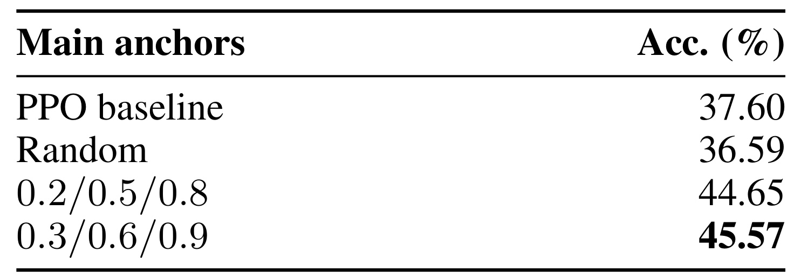
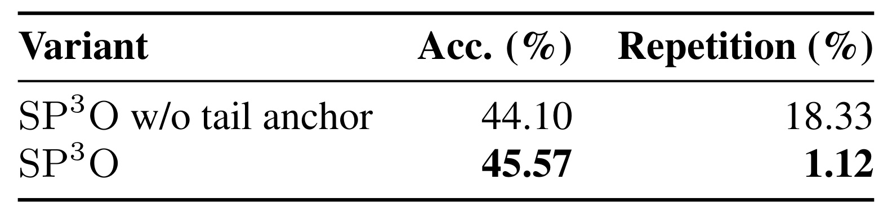

SP3O：为什么逐词训练的 PPO 价值模型反而看不清推理过程
论文：Rethinking Critic Learning in PPO: Understanding and Mitigating Value Flattening
作者：Yizhuo Li、Jianhao Yan、Yun Luo、Zhi Wang、Futing Wang、Rong-Xi Tan、Kanghui Tian、Ganqu Cui、Ning Ding、Peilin Zhao、Yafu Li、Yu Cheng。前两位为共同第一作者。
机构：第一作者主要机构为上海交通大学，同时来自上海人工智能实验室；合作机构包括西湖大学、南京大学、清华大学、香港中文大学、南洋理工大学。
发布时间：2026 年 9 月 16 日，arXiv v1；精读日期：2026 年 9 月 18 日。
论文入口：arXiv:2609.18708
代码状态：PDF 首页提示有项目/代码入口，但本轮未核验到独立链接。
阅读范围：17 页完整论文，包括主文、训练超参数、诊断定义、理论附录与稀疏锚点消融。以下事实以该版本为准，推断与待验证方向在文中注明。
1. 背景和问题
同一回复中，基于多次续写估计的状态价值会在中间状态间急剧变化，而 PPO 的价值预测却相对平坦。
这是本文摘要所指出的核心现象，作者将其命名为 Value Flattening，即价值变平。它发生在一个很具体的接口：策略模型已经生成一段推理前缀，价值模型需要估计“保持当前策略，从这段前缀继续写，最终答对的概率”。若刚刚发生的推理步骤大幅改善或破坏成功机会，合理的价值估计也应随之变化。可是论文看到的价值模型常把同一回复中的状态看得过于相似：它可以逐词输出一个数字，却没有真正提供逐词可分辨的成功机会信息。输出分辨率与有效信息分辨率之间的差距，是理解整篇论文的起点。
长链推理中的终局奖励尤其容易让这个问题隐藏起来。一次回答最后答对，训练便得到一个正结果；答错，则得到一个负结果。但前缀是否有价值，取决于从那里重新出发的后续分布。一个最终失败的样本可能前半段仍有很大概率成功，只是在某个关键决策之后走偏；一个最终成功的样本也可能在较早阶段依赖后续幸运纠错。将整条路径的单次结局直接当作各位置的真实成功概率，会把已经发生的样本结果和仍然包含随机性的条件期望混淆。本文不否认用样本回报做价值回归的标准做法，而是检查这种回归在有限数据、强相关前缀与神经网络共享参数条件下实际学到了什么。
为区分两者，作者在固定前缀后反复独立续写，按当前策略的终局奖励平均值估计状态价值。这里不是人工标注某一步“逻辑正确”，也不是请另一个模型给过程分数，而是继续使用同一个策略回答同一个后续问题。一个形式上正确但当前模型难以完成的前缀，其策略条件价值仍可能不高；一个包含可修复错误的前缀也未必价值为零。因此，这个指标直接对应价值模型应该近似的对象，避免把外部过程判分与当前策略的成功概率当成同一个量。
符号解释：这里的 $s_t$ 是固定的推理前缀，$\pi$ 是执行续写的同一个策略，$K$ 是该状态的独立续写次数，$G_t^{(k)}$ 是第 $k$ 次续写获得的终局回报。对于二值正确性奖励，这个均值就是经验成功率。它是有采样误差的诊断参考，不是理论真值，更不是 SP3O 在日常训练时新增的监督标签。

图中每行对应一次训练检查点，分别为第五十、一百五十、二百五十和三百五十步；左半边是最终答错的回复，右半边是最终答对的回复。黑色折线表示通过多次续写估计的状态价值，蓝色方点表示 PPO critic 的预测。应先沿单个小图从左向右阅读，再比较两条曲线在同一段前缀增长过程中的变化。最上排第三个案例里，经验价值上升约零点六一，预测反而下降约零点零六；第二排第三个案例里，经验价值跃升约零点八四，预测却几乎没有对应响应。这不仅是幅度偏小，有些局部变化方向也相反。
这些小图能够说明“最终正确”不意味着整条回复从头到尾都容易正确，也说明“最终错误”不能给早期前缀判死刑。第三排右侧某条最终正确的回复，在中间位置出现显著成功率下滑，后续仍可能通过特定续写路径得到正确答案。价值模型若只是顺着最终标签输出一个整体偏高或偏低的轮廓，就很难呈现这种风险变化。训练检查点之间的重复出现进一步表明，现象并非只发生在初始化阶段；critic 学会区分不同回复之后，仍可能失去同一回复内部的细节。
不过，图中的回复是为展示大幅局部变化而选择的案例，不能据此推导“所有状态都如此”或直接计算失败发生率。作者之后用聚合误差与受控环境补足证据。理解它的合理用途，是确认一种可以反复观察的失配模式，并据此追问常规总体回归损失是否掩盖了局部价值误差；不是从几张最鲜明的曲线推断整个数据分布的效应大小。这种区分也解释了为什么后文同时报告回复级区分能力和回复内变化能力：两项能力既有关联，也可以沿不同方向变化。
作者还在随机 FrozenLake 中观察类似现象。环境状态是迷宫格子，成功到达终点得到一，掉进洞或达到最长步数得到零；每个格子的价值对应从那里最终到达目标的概率。保持训练配置不变并扩大迷宫后，预测地图越来越平滑，与参考价值的局部对比及误差恶化。这支持价值变平并非数学推理文字的独有现象，但这个受控观察仍然与有限训练预算、状态访问覆盖相伴，不能单独证明状态空间大小是唯一原因。语言模型状态空间的扩大也不等价于简单增加迷宫边长，论文在两者之间建立的是现象联系。
与无 critic 的 GRPO 等方法相比，PPO 原本应通过状态价值构造更细的优势估计。若它在一条回复内只是重复一个相近的基线，就可能没有发挥额外价值网络的全部作用。与通过大量分支续写直接估计中间价值的方法相比，本文则尝试保留现有 critic 和常规 rollout，只改变哪些位置承担价值回归损失。这使研究问题从“如何制造更多过程标签”转成“已有终局标签应该在多少个、什么位置使用”。其价值在于识别训练信号的相关结构，而不是假设监督点越密集，实际有效信息必然越充分。
长回复里相邻词元并不对应独立的推理决策。有的步骤需要多句文字才完成，有的一个符号却会改变后续可行空间；按词元密度均匀铺设同一个标签，没有利用这种语义差异。本文选择相对位置而没有显式解析思维步骤，是一种简单可控的干预。因此它解决的是监督相关性和覆盖问题，不应被称为已经识别出每条回答的关键推理节点。
2. 方法
2.1 PPO 的价值回归与终局监督
原文先回顾 PPO，再分析 critic 的监督结构。给定提示和已经生成的前缀，actor 产生下一个词元；旧策略负责采样一批完整回复，新策略在这批数据上最大化裁剪后的代理目标。critic 的预测参与优势估计，从而影响哪些动作应增加概率以及更新幅度。SP3O 保留这个 actor 目标，保留 rollout 和回报构造，也保留每个生成位置的价值预测。它干预的是反向传播时价值损失的选择掩码，而非把整条优化链路换成另一种算法。
符号解释：$\theta$ 是 actor 参数，$a_t$ 是状态 $s_t$ 下生成的词元，$\rho_t$ 是新旧策略概率比，$\widehat A_t$ 是估计优势，$\epsilon$ 是裁剪阈值。原文公式一取两个代理项的较小者，限制概率比越界时继续放大收益的动机。价值误差不仅改变优势幅度，也可能改变优势符号，因此它对实际裁剪更新的影响不能仅用平均基线大小描述。
符号解释：$r_t$ 是即时奖励，$\gamma$ 为折扣因子，$\lambda$ 为 GAE 参数，$\phi_{\mathrm{old}}$ 是采样时 critic 参数，$T$ 为回复长度，终止状态价值设为零。原文公式二先计算时序差分残差，再累计优势，最后得到价值回归目标。本文实验把 KL 系数设为零，仅在终局给予任务奖励，并使用 $\gamma=\lambda=1$；在这些条件同时成立时，求和发生望远镜抵消，所有位置的回归目标都等于该回复的单次终局奖励。
符号解释：$B$ 是 rollout 批次，$T_\tau$ 是轨迹 $\tau$ 的有效长度，$R(\tau)$ 是其二值终局奖励，$\phi$ 是待更新 critic 参数。这个按词元总数归一化的目标对应原文公式三在实验条件下的形式。较长回复在密集损失中贡献更多监督项，而同一回复所有项的目标完全相同。对于存在过程奖励、非零 KL shaping 或不同折扣参数的配置，不能直接沿用这个简化等式，必须重新检查目标是否仍共享同一个回报。
2.2 隐式方差惩罚与时间相关
令同一回复的预测均值为所有位置预测的平均数，对每个残差加减这个均值，交叉项因中心化求和为零而消失，就得到原文的关键恒等式。它没有新引入显式正则项，却揭示了密集回归在单条样本上同时优化两件事：整体均值贴近终局结果，以及所有位置尽量互相接近。前者可以帮助区分最终成功和失败的回复；后者则会对真实存在的状态价值差异施加收缩压力。
符号解释：$v_t=V_\phi(s_t)$ 是当前 critic 预测，$R$ 是该回复共同的终局标签，$\bar v$ 是回复内预测均值。右侧第二项是预测值的经验方差。原文公式五说明每个位置都被直接纳入这一惩罚，因此用同一标签覆盖整条回复会鼓励平坦轮廓。需要注意，这是对有限样本损失的分解；它不意味着 Monte Carlo 回归在无限覆盖、充分表达等理想条件下必然学不到正确条件期望，也没有证明所有 critic 的总体最优解都应为常数。
另一个因素是前缀状态之间的时间相关。相邻语言模型状态几乎共享全部输入，仅多一个词元；把它们全部算作训练点并不等于获得同样数量的独立信息。原文用线性价值头说明表示相近为何会连接到梯度相近，然后测量整个 critic 的梯度余弦相似度。这里必须同时考虑表示与残差：即使隐藏向量相似，若误差符号相反，价值头梯度也未必同向。因此论文的机制论证既依赖代数关系，也依赖数据中的实际相似度测量，不能单从“相邻前缀相似”跳到“所有梯度完全冗余”。
符号解释：$h_t$ 为 critic 输入价值头的隐藏向量，$w$ 为线性头权重，$g_t^{(w)}$ 为该位置平方误差对价值头的梯度。如果隐藏向量近似且残差同号，这些更新倾向对齐。重复聚合高度对齐的更新更容易推动共享方向，而修复回复内不同状态的细微差别需要状态间 Jacobian 存在足够差异。这解释了为什么仅调大训练步数或监督密度不一定修复问题，甚至可能更强化已经占优的共同方向。
2.3 SP3O 稀疏监督及优势误差边界
SP3O 只在少数间隔充分的状态上计算 critic 回归损失，但仍在所有生成状态上预测价值并构造 actor 优势。 对每条回复选择锚点集合，默认相对位置为百分之三十、六十和九十；长度达到六千一百四十四词元时，再加百分之九十五的尾部位置。这是“基础三个锚点加条件尾锚点”，不能缩写成所有回复永远只有三个监督点。选择少量位置使方差压力仅直接作用于这些预测，扩大间距则减少相邻状态的重复更新；两项设计分别对应前一节的两个问题。
符号解释：$I(\tau)$ 是轨迹的监督锚点集合，$|I(\tau)|$ 是该轨迹实际锚点数，其余符号延续前文。原文公式六按全批实际选中锚点总数归一化。因此实现时只把未选中的损失置零、仍用全部词元数作分母，会改变有效梯度尺度，不能称为忠实复现。长回复增加一个锚点也改变每条回复的相对权重，稀疏化效果可能同时含有密度、位置和样本权重的变化，需要在进一步实验中辨别。
这项方法不需要新增过程奖励，也不把多次 MC 续写引入训练循环。正常训练只使用已有 rollout 的终局结果；大量续写是在评估固定检查点时产生的诊断数据。推理部署时 actor 继续照常生成，是否单独保留 critic 属于部署选择，论文没有提出一种必须在线运行稀疏锚点决策的新解码器。未被直接监督的位置依赖同一网络的参数共享来泛化预测，因此“只训练少数位置”并不保证其余位置一定准确，必须通过整条回复的诊断而非仅观察锚点训练损失来验收。
附录把总价值误差拆成回复均值误差与回复内部轮廓误差，有助于说明为何只看回复级 AUC 不够。把每条回复中的参考价值和预测都减去各自均值，可以隔离内部变化失配，而不让整体高估或低估支配结果。
符号解释：$N$ 为回复数，$m_i$ 为第 $i$ 条回复评估状态数，$q_{i,t}$ 为策略条件真值，$v_{i,t}$ 为预测，横线表示各回复内部均值。原文公式十至十一按回复等权分解；若按词元等权，则相应回复权重改为有效状态数占比。中心化误差小表示相对价值轮廓更准，却不自动表示绝对概率已校准。
符号解释：$\Delta g$ 是使用 critic 基线和真值基线的有限批次 actor 梯度差，$z_{i,t}$ 是旧策略处的对数策略梯度，$e_{i,t}=v_{i,t}-q_{i,t}$，$\bar e_i$ 为误差均值，$e_{i,t}^{\circ}$ 为去均值误差。这是原文公式十四。第二项显示，回复内部的预测错误可通过与中心化策略梯度的乘积改变实际更新；但这只是局部梯度恒等式，不是最终准确率提升的充分条件。附录进一步用柯西不等式给出范数上界，其含义是误差规模与策略梯度规模共同约束偏差，不能从这个界单独推出具体梯度方向。
符号解释：$b(s_t)$ 为与当前动作无关的状态基线。原文公式十九仍然承认标准的期望策略梯度基线不变性；真正受影响的是有限批次方差、相对优势以及多轮 PPO 更新中的裁剪分支。因而本文不应被解读成“没有精确 critic 就产生有偏的理想策略梯度”。它指出的是实际批次上的优化路径可能不同，并以经验结果支持这种差异在当前设置下有利。
3. 实验结果
3.1 从表示相关到局部价值精度
主要实验使用 Qwen3-4B-Base 和 Qwen3-8B-Base，在 DAPO-Math-17k 上训练。每轮 rollout 为六十四个提示各采样八个回复，总计五百一十二条；actor 更新批次为二百五十六，每轮 rollout 对应两次更新。训练最大回复长度为八千一百九十二，温度为一；actor 学习率为百万分之一，critic 为百万分之四；使用 Adam，参数为零点九和零点九八，权重衰减零点一，PPO 裁剪阈值零点二，critic 单独预热二十个批次。主结果使用二万四千词元的评估设置，训练和评估长度上限不能混写。基线包括初始化模型、标准 PPO 与 GRPO。

左侧对同一回复的 actor 与 critic 表示做降维，颜色表示回复进度。critic 的点云明显更紧密，并且其坐标展示已经额外放大两倍；因此不能仅凭两幅图中点云的绝对面积做数值比值，合理读法是观察对应坐标处理下状态间分离程度。右侧左图进一步显示，早中晚三个训练阶段的隐藏向量对齐、梯度对齐和更新能量均维持在很高水平。更新能量刻画的是预测更新中共同成分的占比，高值意味着大量位置被相近的共同方向推动，并不是模型“消耗了更多算力”。
右侧最末图把完整 critic 梯度的相似度按相对词元距离分组，距离越远，相似度总体越低。这是选择间隔较大锚点的直接经验依据：从几乎相同的前缀中抽取更多监督，未必获得更多独立方向；跨较远位置则有机会覆盖更不同的状态。但纵轴仍处于高相似度区间，因此稀疏锚点并未把训练样本变成完全独立状态。阴影也提示样本异质性，曲线并不是所有回复上都严格单调下降的定律。
把表示图、梯度图与前文线性价值头公式联系起来，证据支持“相关性会强化冗余更新”的解释，却尚不足以完全排除其它因素。例如共享骨干、终局标签噪声、不同长度权重，都可能与相似度共同变化。本文的实验干预一次改变了监督数量和间距，因此这张机制诊断更适合用来说明方案为何合理，而非宣称已经识别每个因素独立贡献多少准确率。复现者还应记录采样前缀的有效长度、padding 掩码及归一化方式，以免把无效位置的共同表示误当作时间相关证据。

左侧为提示匹配的两个案例：PPO 和 SP3O 各自在自己的策略下生成回复，再用各自策略续写得到参考价值。两个方法面对相同提示，并不意味着走了完全相同的推理路径，所以要比较的是“各自 critic 与各自参考曲线的贴合程度”，不能把两种方法的黑线当成同一个固定标签。图中对回复进行了中心化，纵轴可以为负，这并不代表负的成功概率，只代表某位置的价值低于该回复平均水平。提示甲的轮廓均方误差由零点零四六七降至零点零零六四，提示乙由零点零九零二降至零点零三三六，展示了改进幅度也随样本而变。
右侧聚合比较报告在百分之三十、六十和九十进度处，SP3O 的中心化误差相对下降百分之三十六、十一和二十一。它说明改进不仅来自左侧挑出的两个示例；同时，三个位置的降幅差异提示模型并非均匀解决了所有区段。末段仍有相对更大的误差，可能与更复杂的长前缀和后续修复机会有关，但论文没有用这个图证明具体原因。不能把“下降百分之三十六”转述为整体准确率上升三十六个百分点，也不能将中心化均方误差直接解释为概率校准指标。
这一诊断的采样成本较高。附录固定六十四条回复，在十九个中间位置和一个终止位置进行评估；非终止位置从一百二十八次独立续写开始，按六十四次追加到最多二百五十六次，当百分之九十五 Wilson 区间半宽不超过零点零四时可提前停止。续写温度为一、top-p 为零点九五、最多八千一百九十二词元；终点直接采用已观察奖励。因此参考曲线也带有采样不确定性，尤其小变化不能轻易解释为真实概率差异。大批量 MC 在这里用于检验机制，而不是免费生成的真值，更不能计入 SP3O 的常规训练监督后仍声称算法没有额外 rollout。

左图把回复级 AUC 和回复内部预测变化率放在同一坐标系。PPO 随训练推进向右移动，说明越来越能用平均预测区分最终正确与错误回复；但同时向下移动，说明内部变化所占比例下降。SP3O 则向右上方移动，两项能力一起改善。这是一条有辨识力的证据：一个总体评价更好的 critic 仍可能丢失内部价值信息，因此仅看终局分类表现或平均回归损失会遗漏本文提出的失败模式。这里的变化率是回复内平方偏差占全批总平方偏差的比例，不是单条回复的标准差，也不是“百分之多少词元获得正确奖励”。
中图用隐藏状态矩阵的有效秩表示输入价值头的状态多样性。作者先单位归一化向量，再在回复内去均值，以矩阵谱的熵计算有效秩；SP3O 的中位数从 PPO 的四点三三提高到五点六三。这个统计量概括的是状态表示能量分布在多少个有效方向，不等同于网络参数秩，也不能据此推断可删除某些模型层。它与左图的内部变化率一起支持稀疏监督保留了更丰富的状态差异，但有效秩更高本身不必然带来更准的价值预测，还需要与前一张误差图相互印证。
右图比较两种目标产生的价值头梯度差异：一种目标是重复的单次终局回报，另一种是 MC 估计的状态价值，再对回复聚合取均方根。SP3O 在所展示进度上的差异较小，表明其状态表示与单次终局目标组合后，更新更接近用 MC 参考目标回归的方向规模。它不是 actor 梯度方差的直接测量，也不是对实际优化轨迹逐步误差的完整因果估计。三联图共同提供了“区分能力保留、内部表示更丰富、参考梯度差距缩小”的相容证据，避免仅凭一项 critic 指标判断训练已经改善。
3.2 数学任务与分布外任务

表一按模型规模分成两块，每个数据集分数对三十二次生成求平均，最后一列再对七个任务做平均。Qwen3-4B-Base 的数学平均分从 PPO 的三十七点六提高到四十五点五七，绝对提升七点九七个百分点；相对 GRPO 的三十九点二六提高六点三一个百分点。初始化模型只有十七点九五，显示强化学习整体带来较大提升，但论文新方法的增益应优先与已训练的 PPO 和 GRPO 比较，而不是把相对 Base 的全部变化归给稀疏监督。四十亿规模下七个任务都优于这两条基线，提升并非只由某一列拉动。
八十亿规模的平均分为五十点五一，相比 PPO 的四十八点五提高二点零一个百分点，相比 GRPO 的四十七点九一提高二点六个百分点。相同方法在两种规模上都有平均收益，但四十亿规模的收益更大，不能仅凭这两点外推出“模型越大收益越高”或“规模扩大以后一定保持同等增益”。不同基础模型能力和基线训练状态都可能影响可改进空间。尤其应保留 Minerva 这一反例：SP3O 为四十七点四，低于 PPO 的四十八点八一，也低于 GRPO 的五十二点零六，后者才是该规模该列的最好结果。
因此，论文所说跨规模和评测套件稳定改进，恰当解释是平均分层面一致，而不是所有单项都胜出。表中的 avg@32 也不是“采样三十二次有一次正确就算成功”的 pass@32；它把多次生成的准确性做平均，二者回答不同问题，不能互换。主表没有为每项平均分同时给出训练随机种子置信区间，采样三十二次也不能替代多种子训练复验。对于较小的八十亿平均提升，应继续核对方差、检查点选择和生成预算，才能评估稳定性与可迁移性。

表二考察数学训练是否改善其它推理任务，包括 ARC-C、MMLU-Pro、GPQA、AGIEval、BBH 和 ZebraLogic。四十亿模型的平均分由 PPO 的五十一点九五提高到五十九点二八，绝对提升七点三三个百分点；相比 GRPO 的五十六点四四提升二点八四个百分点。ZebraLogic 从九点九提高到十九点二，属于显著的绝对增量，但起点很低，即使接近翻倍也不意味着任务已经被解决。GPQA 上 SP3O 与 GRPO 都为三十八点八九，应该记为并列，而不是单独领先。
八十亿模型的分布外平均分由 PPO 的六十四点三八提高至六十六点三七，增加一点九九个百分点；相对 GRPO 的六十四点九一增加一点四六个百分点。单项仍有差异：ARC-C 的 PPO 为九十三点八四，高于 SP3O 的九十三点一三；MMLU-Pro 上 GRPO 的六十六点二七也高于 SP3O 的六十五点八三。相反，在 GPQA、AGIEval、BBH 和 ZebraLogic 上，SP3O 获得表中更高结果。这个分布支持方法并非只提高训练领域内数学题，但也要求用套件组成与具体任务来描述泛化边界。
所有列采用四次生成平均，最后一列为六任务不加权平均；它与表一的三十二次生成口径不同，不能把两个表的均值再直接混合为一个无条件总分。带标记的后三项通过 xVerify 使用 gpt-oss-120b 验证器评分，前几项和后三项的判定流程不完全相同。验证器为自由文本答案提供可操作判分，但可能引入自身误差，因而“分布外”描述的是相对数学训练任务的评测转移，不构成未见所有知识、没有任何训练重叠或评估完全无噪声的证明。对部署选择而言，应该优先看最接近目标负载的单项，而不是仅以通用平均分替代场景评估。
3.3 训练动态、锚点密度与尾部覆盖

四个子图必须一起读。第一幅显示 SP3O 在多数训练阶段具有更小且更平稳的轮内 actor 更新变化；第二幅显示验证准确率在训练早期之后整体高于 PPO；第三幅显示 rollout 奖励也更高。若只出现更新幅度变小，可能仅意味着学习得更慢，但与准确率和奖励同时改善，才支持作者关于优化更稳定且有效的解释。这里“更稳定”对应所测的更新变化指标及曲线走势，不能延伸为任何学习率、任何奖励设计下都不会出现发散，也不是统计上对所有随机种子方差的完整报告。
第四幅揭示一个容易被标题忽略的代价：SP3O 的回复明显更长，并较早进入数千词元区间，而 PPO 长度增长较慢。更多词元可能意味着利用了更长的推理链，也可能增加冗余计算，仅凭这张图无法区分两者。训练奖励和准确率上升发生在生成长度也变化的过程中，所以不能把全部收益视为同样推理预算下更好的信用分配。公平比较应补充固定总生成词元、固定 wall-clock 或不同解码长度上限下的准确率，而论文当前主图没有完成这些成本归一化对照。
稀疏损失的计算项少，并不保证整个训练成本更低。critic 仍然要对完整序列产生值，长序列骨干前向与反向、actor 更新和 rollout 都有开销；只在少数输出位置附加损失也不意味着其它位置的隐藏计算可以全部跳过。再考虑 SP3O 更长的生成，其总训练或推理成本可能与“监督点数从数千降到三”给人的直觉不同。本文没有提供一张足以证明端到端吞吐大幅提高或显存按同等比例下降的成本表，因此这里应把它归为有效性机制干预，而不是已经验证的全面加速方案。

表三给出一个非常重要的负对照：随机选择三个位置的准确率为三十六点五九，反而低于密集 PPO 的三十七点六。因此“随便删掉绝大多数监督就会更好”并不是论文结论。固定的百分之二十、五十和八十位置得到四十四点六五，固定的百分之三十、六十和九十位置得到四十五点五七，两种覆盖方案都明显优于随机。这支持拉开位置间隔、覆盖足够晚的状态有帮助，也提示随机点可能过于集中或遗漏关键区段，但具体随机样本的间距分布与每种失败比例需要额外记录才能确认。
两个固定方案相差零点九二个百分点，比它们各自相对随机方案的差距小很多；因此首要信号是有结构的覆盖，随后才是这组配置里较晚的覆盖更优。这里的三个位置指基础锚点安排，默认方案还带有长回复条件尾锚点，不能据表头的基础数量就断言每条回复恰好三个损失项。对实现复核尤其要核对相对位置按有效回复长度计算，是否排除提示词、padding，以及短回复位置取整后是否去重。这些细节会影响实际监督集合；本文给出位置比例，但没有把所有框架索引约定逐一规定。
原文 Figure 7 另比较监督数量为三、四、八、十六、六十四及密集的情况。三到八个位置的平均训练奖励较高，十六和六十四趋近密集基线，三点配置最好，但作者也承认多次运行的变动不可忽略。这与“监督越多越好”的直觉相反，又不支持把三个当作跨模型、跨任务的普适常数。附录位置曲线同样表明，仅增加点数并不可靠地提高表现。实际迁移时应联合扫描点数、间距和末段覆盖，且把奖励曲线与最终测试准确率分开，避免用训练奖励替代泛化结论。

表五保持其它监督锚点不变，只移除最终尾部锚点进行匹配比较。没有尾锚点时准确率为四十四点一、重复率为十八点三三；完整 SP3O 准确率为四十五点五七、重复率为一点一二。准确率提高一点四七个百分点，重复率则下降十七点二一个百分点。这个差异说明尾部覆盖的作用不只是略微补高平均分，还与生成稳定性强相关。默认尾锚点位于回复进度百分之九十五，仅对长度至少六千一百四十四的回复启用，因而它针对的是长回答末段容易失去监督的区间。
从机制上推测，末段缺乏直接约束时，早中段锚点的共享更新未必足以控制长回复后段的价值估计，可能给重复延长的生成行为留下空间；增加尾锚点为这些状态提供了更直接的终局回归信号。不过这只是与表中结果一致的解释，论文没有逐条证明重复内容是由某个具体价值误差触发，也没有给出所有重复模式的因果轨迹。重复率作为生成行为指标还依赖检测定义，当前表格没有展开完整判定算法与置信区间，复现必须进一步核对实现，不能用自己的重复检测器得到不同结果后直接声称论文不可复现。
尾部消融也限定了“更稀疏一定更好”的说法：在已经稀疏的基础上，恰当增加一个锚点反而明显改善表现。真正起作用的是监督信号覆盖和相关性的平衡，既要避免密集的重复回归，也要防止关键状态完全缺少直接约束。因此三个主锚点、长回复阈值、额外尾锚点应视为一组完整实验配置，而不能挑最简洁的一部分宣传。若将方法移到不同最大长度、不同终止奖励或存在工具调用的轨迹上，应该重新验证阈值与末段语义；原来的词元比例并不自动对应新的决策阶段。
4. 总结
SP3O 最值得保留的认识是：价值模型是否有用，要同时看它能否区分不同回复，以及能否解析同一回复里的状态变化。本文先以多次独立续写构造策略条件价值参考，展示两者的差距，再用损失分解和梯度相关性解释为何密集终局监督可能强化平坦预测，最后通过稀疏且间隔充分的锚点进行干预。它没有引入复杂的额外奖励网络或树搜索训练，而是在现有 PPO 价值回归接口上做小改动；这使机制容易隔离，也让实现中的掩码、归一化和尾部规则成为关键。
实验给出的正面结论是明确的：两个 Qwen3 模型规模、数学与分布外两个套件的平均结果都提高，四十亿规模收益尤其明显；critic 的中心化误差、表示多样性和训练动态也提供相互支持的证据。但是这些证据对应的范围仍有限，不能把所有表现改善都归为已经严格证明的单一因果链。损失恒等式说明存在收缩压力，相关性测量支持冗余更新解释，最终准确率说明这组干预在当前任务有收益；三个层次的证据应分别理解，不能用其中任何一项替代另两项。
需要保留四个具体限制。第一，理论简化依赖终局奖励、零 KL 系数和两个折扣相关参数均为一，带过程反馈或奖励塑形的系统要重推目标结构。第二，模型和训练数据集中在同一模型家族与数学训练集，未覆盖多轮工具调用、不同架构、超长代理轨迹等设置。第三，单项并非普遍领先，八十亿 Minerva、ARC-C 和 MMLU-Pro 的反例说明迁移收益取决于任务，平均分不能覆盖所有负向变化。第四，生成明显变长，论文尚未证明在固定算力与固定词元预算下仍保有同等收益，少量监督项更不等于同等比例的训练加速。
诊断本身也有边界。MC 参考来自有限次数的续写，且每种方法使用自己的策略，这让它适合检查各自 critic 的校准对象，却不能把两条不同策略路径视为严格同状态反事实比较。中心化之后误差下降，强调的是内部轮廓改善，不能自动推出绝对值已准确。主表的采样平均数不替代多个训练种子的稳定性证据；尾部重复率的大幅变化很值得关注，但还需核对检测规则和不同长度段的发生率。附录对理想期望基线不变性的说明同样重要：本文研究实际有限批次 PPO 的优化差异，并未推翻策略梯度的标准结论。
下一步最有价值的验证可以分成三个独立实验。首先，在相同训练词元与推理长度预算下复验 PPO、SP3O 和不同锚点变体，报告准确率、吞吐、显存、实际生成量与随机种子区间，判断收益来自更好的更新还是更多推理。其次，分离监督数量、位置间距、尾部覆盖和回复权重四个因素，尤其加入保持每条回复权重一致的对照，从而更清楚地区分减冗余与重新加权。最后，把回复均值误差和内部中心化误差一起纳入训练检查点评估，在带非零 KL 或过程奖励的配置下重新检验价值变平是否仍存在，以及原来的锚点比例是否仍适用。
对正在维护 critic 的训练工程而言，合理起点是先测量，而非直接把所有密集损失删成三点。可以用小规模固定提示面板验证是否真的出现局部价值失配，再做受控锚点实验；若随机稀疏低于基线，或尾段重复明显上升，应回到覆盖和目标口径排查。论文最终提供的是一个可检验的失败模式与简洁干预方式，而不是一个脱离奖励定义、长度分布与成本约束的万能超参数。